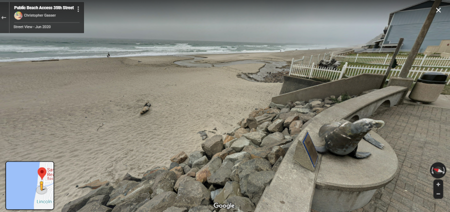
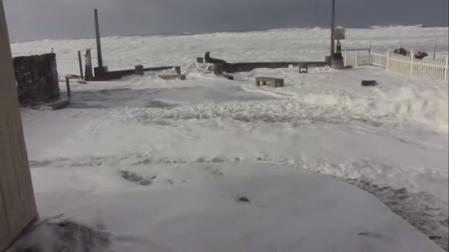
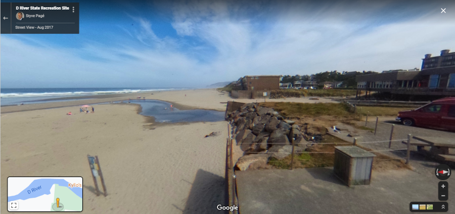
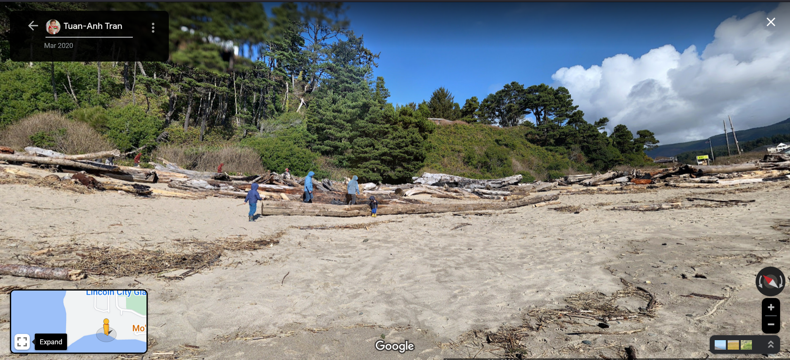
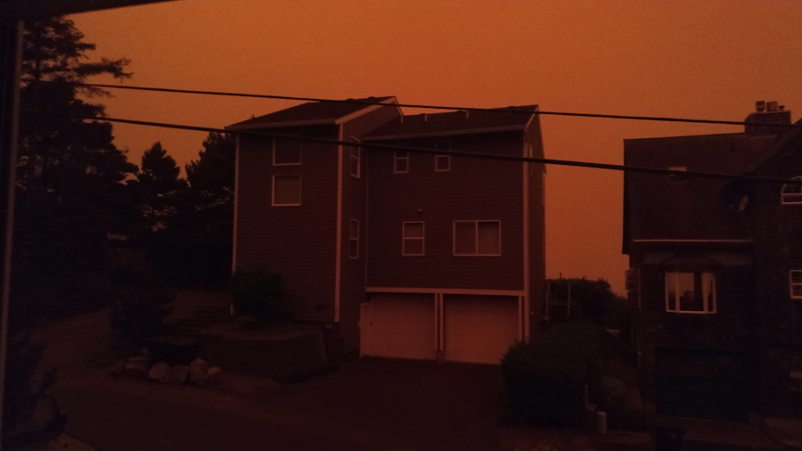

Winter is king tide season here on the Oregon Coast. King tides occur, "every winter, tides on the Oregon Coast get higher than other times of the year. They occur when the Moon's orbit is closest to the Earth, the Earth's orbit is closest to the Sun, and the Sun, Moon, and Earth are in alignment. This alignment increases their gravitational pull, which affects the tides. The official term is perigean spring tides, otherwise known as King Tides." What does this mean practically? Wicked cool surf.
For example, here's the Joe the Sea Lion statue in Lincoln City, OR at the 35th St Beach Access (another groovy thing about Oregon, the entire 363(ish) miles of coastline is public - no private ownership allowed) at a fairly normal tide level:

This is what the Joe Sea Lion statue looks like during a particularly nifty king tide:

Watch about 30 seconds of this vid to see what happens to Joe the Sea Lion during king tide: https://www.youtube.com/watch?v=Yk0yuKSeoV0&t=22s
Another example? D River in Lincoln city, OR. D River, claimed to be the world's shortest river (a surprisingly contentious title leading to shade thrown like "ocean water backup" and "drainage ditch surveyed for a school project") during a normal tide (notice the couple hundred feet of beach leading up to the pillars of the building on the right):

This is D River during a king tide:

Watch about 30 seconds of this vid (same video as above, but the time stamp is different) to see what happens at D River during king tide: https://www.youtube.com/watch?v=Yk0yuKSeoV0&t=166s
If you go ahead and watch the entire video you'll notice a couple of things. People really like king tides and put themselves in danger watching and/or playing in them. Bad move. The ocean will drag you into its fifty degree (Fahrenheit, natch) embrace without warning while you're wearing all your winter/rain gear, between the shock of the cold and the weight of your clothes you're in serious trouble.
The other thing to notice? Logs. There are a lot of logs thrown up by the ocean on the Oregon Coast:

This leads to wicked fun bonfires and people being crushed under waterlogged logs weighing from hundreds of pounds to a couple of tons. According to that article, it takes only four inches of water to float a five ton log. If that five ton log gets picked up by the ocean and dropped onto you, you are going to have a bad day.
Picture of the houses across the street taken the morning of the wildfire evacuation.

On Monday night - after having spent countless hours barbecuing, drinking, and lazying a beautiful, sunny Labor Day holiday away - we went to bed. Unlike my partner in crime, I couldn't fall asleep right away, so I stayed up for a while and read in bed. Around midnight, the power started flickering on and off intermittently, and by 1:30 in the morning the power had gone completely. I got outta bed, grabbed a flashlight, and went downstairs to keep reading. When I turned in around three, the power was still out.
Despite the fun and exhausting Labor Day we'd both had, we woke up early on Tuesday to get a jump on the week. In doing so we glanced outside to see the sunrise. The fog off the ocean mixed with the early morning sun gave a delightful red-orange glow to the world. Simply gorgeous. Great way to start the work week. My better half went outside to take the trash to the curb for Tuesday pickup. When she came back in, she said, "That's not fog. It's smoke."
When I'd been reading in the early hours of the morning, I'd heard the wind pickup, and since I like a bit of fresh air, I had a window open. I'd occasionally smelled smoke, in fact, I'd eventually shut the window because of it, but I'd just assumed the smoke was from one of the many bonfires that are burned on the beaches all summer long. There was a burn ban in effect for the entire county - rare during the even-busier-than-the-normally-busy-summer-on-the-coast weekends...think the three day-ers: Memorial Day, 4th of July, and Labor Day - but tourists coming to visit rarely paid attention to the bans, and they were almost never enforced: tourists love them some bonfires, and the city and county want to keep the tourists happy because it meant they'd rake in beaucoup bucks.
"It's smoke," she'd said. I went outside. Sure enough: smoke. We're used to being smoked out a couple of times a year from PNW and Canada fires, but a fire on the Oregon Coast? A place that, according to the Western Regional Climate center, "gets 200 inches (of rain) at points long the upper west slopes of the coast Range?"
Since the power was still out from the strong winds (also not rare on the coast, when built, our house had to have a roof rated crazy fast winds, something like 120 mph (FEMA class G). Unfortunately, power lines' limits are much lower. Since the wind was blowing from the east (also rare on the coast) it meant the smoke from the Oregon wildfires had made it to the coast. The smoke was up. We made sure all of our windows were closed, turned on data on our phones - cell phone towers were still up - and got back to our morning ritual: grabbing laptops, logging into VPNs, and getting down to the business of figuring out where we wanted to sit in our living room while we worked.
We'd just settled into the extra comfy chairs when our phones blew up with chimes and beeps and vibrations: "Did you hear-" "Have you seen-" "The fire-" "Unbelievable-" ...and it was unbelievable: overnight we'd gone from beautiful and mild and cool, enjoying the sunny three day weekend with nothing to worry about to beautiful and hot and a one thousand acre fire just a couple of miles away.
Since the winds were blowing from the east, the coast was due for some warmer weather. Usually that meant temps in the 70s, or maybe once or twice a year the 80s, but today we were due for almost ninety degree weather. It was hot. It was smoky. It was dry.
During that first day we monitored the official sites for information - city, county, and state websites, Facebook pages, and Twitter accounts. The winds, high temps, and dry conditions were hampering containment efforts. All of Oregon's biggest helicopters which could be used to drop water on fires were in Afghanistan. Emergency service sirens warbled, whooped, and waaaaaah'd continuously, dopplering their way through the city. Fire crews were short on availability given all the other wild fires going on. The fire advanced.
Grim news for the home team.
That night we went to bed, the power was still out and the windows were still closed. When we woke up that second day, the fires - two fires actually, Echo Mountain Fire and Kimberly Mountain Fire - combined to form one fire: Echo Mountain Complex. Echo Mountain Complex had jumped the containment lines due to the still strong winds from the east and stupid dry conditions on the ground. About two thousand acres were burning. Strong east winds meant it was roaring our way. Dry conditions and lack of resources meant there was little be done about it.
Caveat Lector